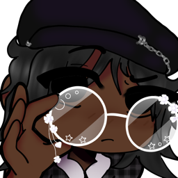

i am Josephine, and I am a game designer! i write video game concepts for fun :)
okay it sounds a bit weird to be supporting it but heres the thing you don't even need to spend money at all for it to be fun! So I will be describing gacha games that are good because of the risk and reward you get for dedicating your time into it! and also some gacha games i dont like because they are confusing or too p2w for my liking hence the hate for gacha game
okay i know its a hoyo game but heres the thing, out of all of the hoyo games i have played this one is the most rewarding and actually FUN TO PLAY, as the gameplay is simple and the characters are always fun to interact with. The only downside is that the game's powercreep is too high and needs to be fixed lowkey
the most free to play gacha game i have ever played, its rates are high and it also encourages against people whaling like what?? thats so different but fun as well, the characters and story are super intense and i love seeing what they go through in their respective stories. its a ride but it is worth it all the while.
hate threadddddd omg this games gameplay is so good but doing it daily is so difficult for me to get through and all the events and oh my god its like an actual dedication to want to play this every day its like an hour daily its super bad. the only upside for me is the characters and it also being kinda f2p friendly bc ive pulled for characters i want and actually get them but thats prob just a luck diff and nothing else. its good if u have time to waste and like fighting game archetype
this game is like p2w hell and also plays like clash of clans and i dont really like it, also its a mix of c.o.c. and a wave rush game its js too much and also the p2w is what kills me
its just better looking genshin. ITS JUST A BETTER LOOKING GENSHIN GUYS THATS ALL IT IS although the characters are quite silly and its f2p forgiving, i just dont like the genshin-esque playstyle so it keeps me from wanting to run it... also its graphic intensive so if u have an even slightly bad laptop ur screwed so good lucckkkkk